燕姿:老娘掐死你[捂脸][捂脸] 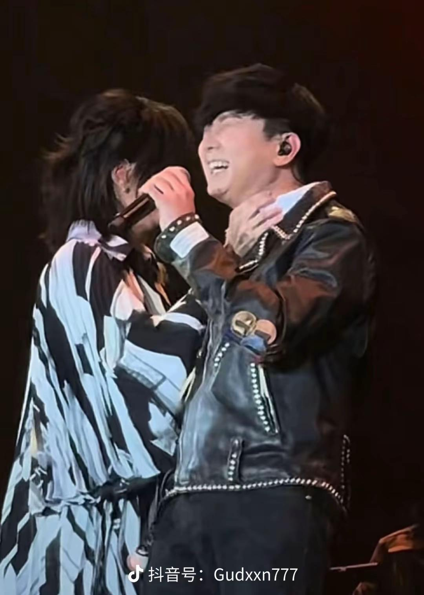
你俩在拥抱和握手之间选择了锁喉[大金牙] 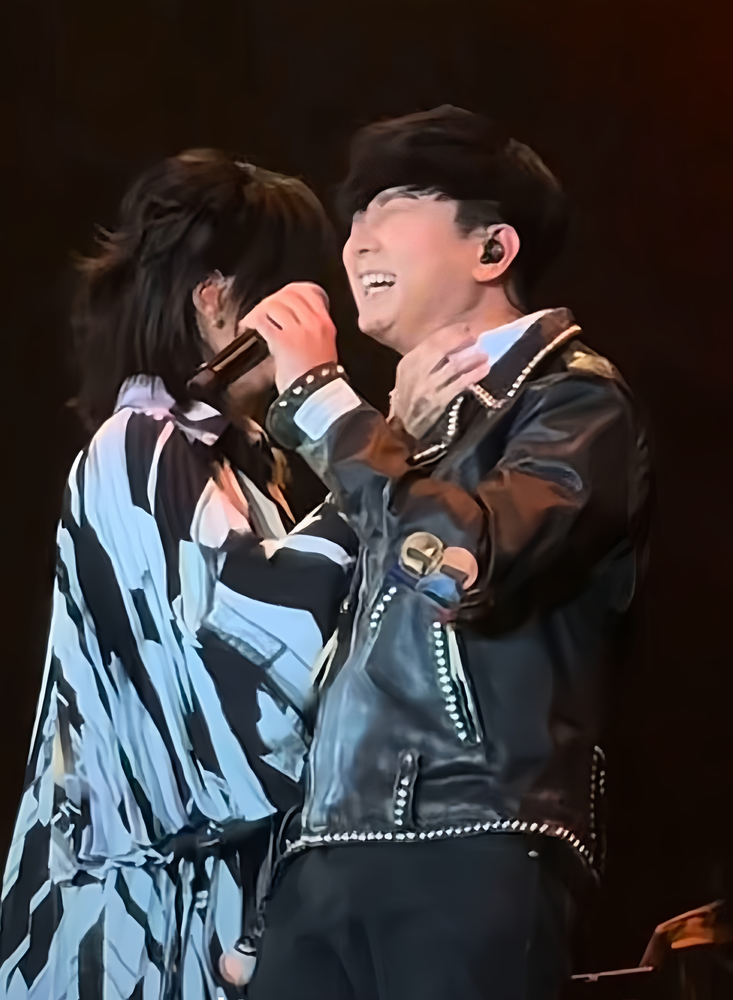
其实JJ就是来看演唱会的，但为什么会出现在台上呢？因为《没座》！[捂脸]
确实是很突然，我哥圣剑都没有，估计都没有提前试音
听说燕姿都不知道jj会来
我哭死[流泪]尤长靖一战成名的歌我怀念的 今天他也在台下我哭了[流泪]
这是多么突然 我哥都没有圣剑[流泪]
什么时候请danking
林俊杰！！！！！你早说我去抢孙燕姿演唱会了！！！！！！
燕姿你也突然出现在北京场好不好[黑脸]
哈哈哈哈哈哈哈哈她们真的好熟，老林笑得 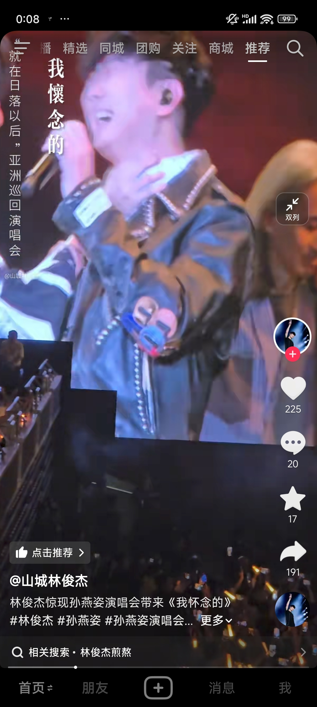
自从被原调煎熬攻击过后 现在整个人都变谦虚了呢[捂脸] 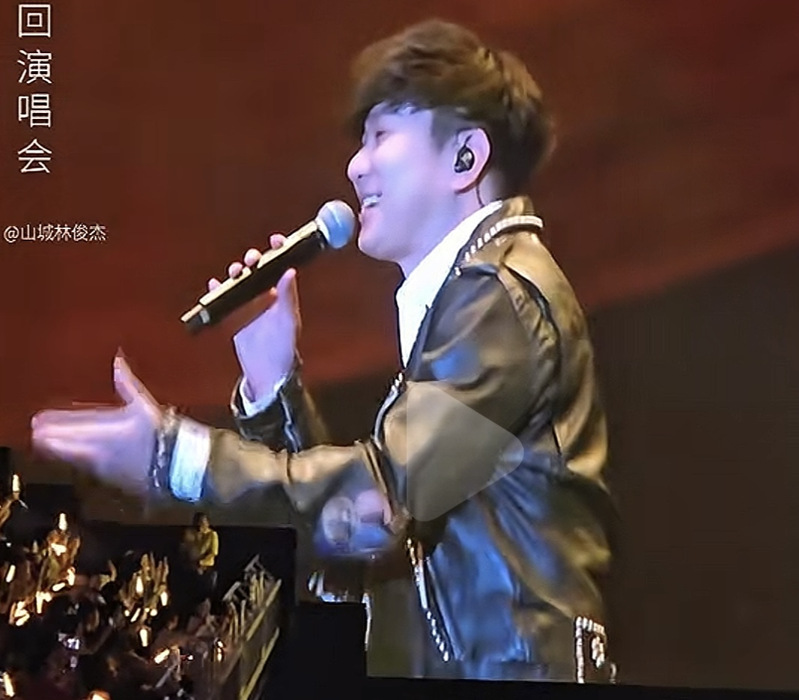
怎么从来没人说孙燕姿漂亮呢？颜值非常在线啊
坡花坡草[流泪][流泪]
立意特别伟大啊老师，第一世母亲以为只要听话就能保护女儿，依附父权；第二世母亲以为利刃在手以为能力是冲出父权牢笼的剑结果败于权势；第三世，母亲以为权势才是利器，只要至高无上就没人能伤害女儿，可是天下人却要她去死，第四世她才知道，吃人的是一座座宅院无论这些宅院用什么筑成……[流泪][流泪][流泪]（瞎解读的老师剪得太牛了
这就是天选母女[强壮]
雁回时最该宣传的就是母女线
第五世： 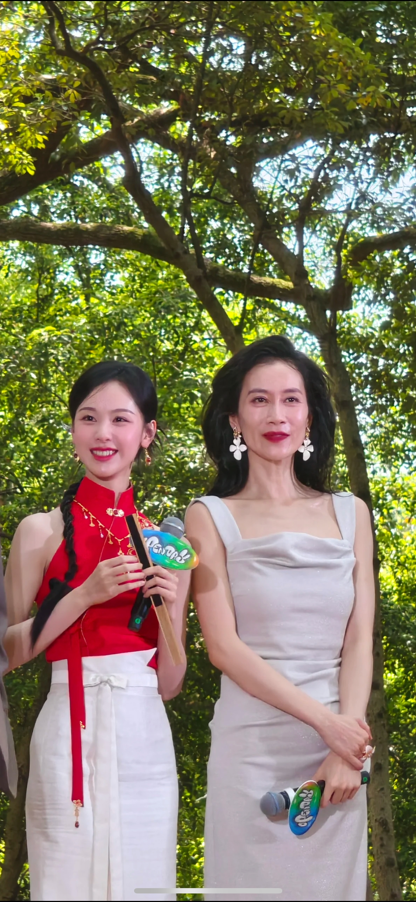
父亲可以是任何人但是只有母亲才是真正血脉相连的人 真的太爽了[不看][不看] 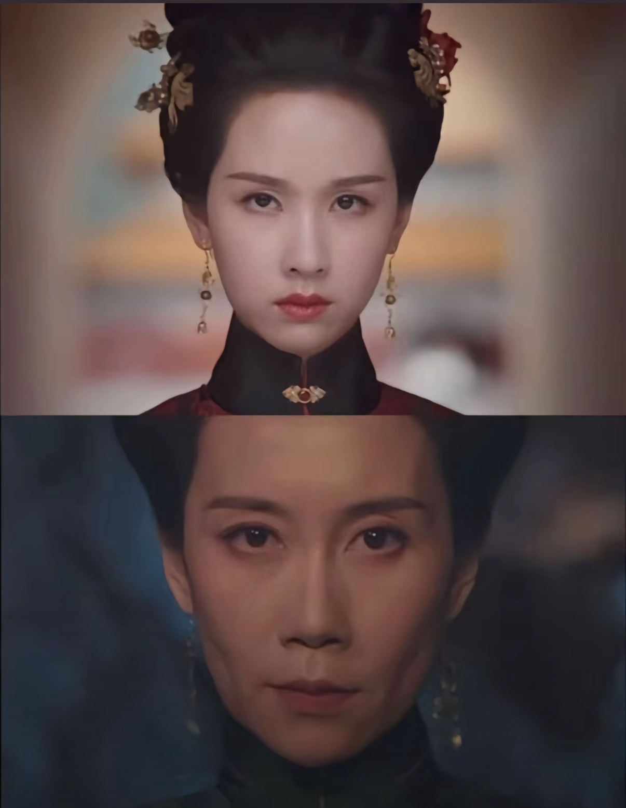
她俩竟然合作这么多次了吗[流泪]真的缘分
为什么我真的有种感觉这是一个为母亲反转命运的系统[泣不成声]以女儿的视角来说就是“ 我辗转三世 只为改变母亲代替母亲成为历鬼诅咒的命运 系统告诉我还有一世我就要成功了 可最后一世 母亲似乎故意瞒着我什么 我不清楚但我一直在尽力完成任务 可当她偏离我的计划被抹杀的时候 系统告诉我“如果你现在的人生是别人逆转得来的 你将不可再次逆转”[泣不成声]
44秒的那一声“雾姬”真的幻听母亲[眼含热泪]
好牛的老师哇[求抱抱][求抱抱]
《玉楼春》《云之羽》《永夜星河》《雁回时》 《大唐狄公案》《金庸武侠世界》《凤凰：她的传奇》
“宿命的线，谁来剪”母女的宿命线是缠缠绵绵的，剪不断的[流泪][流泪][流泪]
怪不得徐峥嵘现实也会让嘟嘟叫妈妈 啊哈哈哈哈原来合作那么多次了
快给她们再递个本子，我要看大团圆结局[微笑]
母女线是雁回时唯一的看点[泪奔]她俩太好磕了
是谁追完了雁回时还在为母女线流泪[流泪]
这就是夺走的17年，而非那什么指腹为婚[尬笑]
[爱心][爱心][爱心]
母女线超绝[憨笑]最后几集撑不下去了[憨笑]因为前面男女主没有感情线，我可以忍受男主[憨笑]后面看的我心如刀绞[憨笑]希望女主独美[憨笑]
妈妈[流泪]你是永远剪辑的神[流泪][流泪]
她们搭了这么多次吗？还是剪辑的[泪奔]
钟哥反侦察意识这么强[憨笑]
我现在没事就喜欢哼两句[捂脸]
钟哥学聪明了[憨笑][赞] 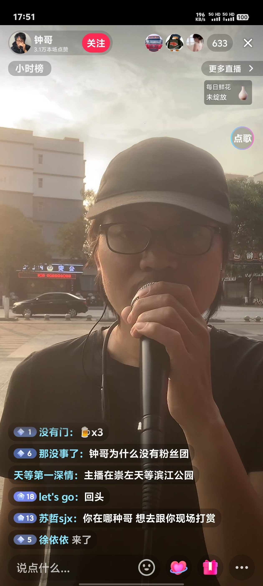
如果有天我爱上了你的老婆 如果你老婆也爱上我🤓 兄弟请你不要放声哭泣😭 我一定不会让她受委屈🥰 如果这缘分是上天安排😇 我会好好的照顾她☺️ 霓虹灯闪烁在烧烤摊前🍢 兄弟别悲伤不要掉眼泪🥺 雨滴敲打着玻璃的裂痕🙀 这杯酒敬你情谊不儿戏🍺
当我有天无意识的哼出这歌的时候，我就知道，我已经完了
什么时候开演唱会，我的电棍续好电了
第一现场：吃饭、逛街、看电影 第二现场：网吧、KTV、酒吧 第三现场：酒店、某人家
“出来玩” “去哪玩” “你先出来” “我到了，去哪玩” “不知道”[微笑]
和女朋友逛街，她突然说要去酒店，我立马拒绝，我就知道肯定要害我，回来就分手了
我朋友听了这个死了[憨笑][赞]
谁懂黑屏之后小黄鸭出来的救赎感[听歌]
我会一直游到有你的那片海
冷空气过敏的有没有，出来一个[捂脸]我好孤独
终于有人说对了，作为一个深受二十年过敏痛苦的老病友，我奉劝大家。。过敏，不要挣扎，远离过敏源。老了免疫系统怂了就好了
这才是正确的执法，而不是一句孩子不懂事就能逃避的[抠鼻]
留个IP 2035年见！
不是感恩而是愧疚感，这句话真的说到心里了
看这段真的很生金明的气 但站在双方角度看好像都没做错[快哭了]太真实了
很多年轻人不想生孩子就是这个原因吧，那种扣扣搜搜托举下的期望真的压的人揣不过气来，愧疚感太重让人很不舒服，父母尽力了，孩子压力也很大
这一段真的好能共情，不过金明比很多人幸运，她的父母真的爱她，许多人明明没有享受过这种托举和爱，随随便便长大也会被愧疚感给压垮
你以为金明很叛逆吗 但是我在她身上看到了我 生活条件不好 但是又是家里最疼爱的那个 把父母所有的爱都在我身上 会因为赚不到钱而烦躁 [眼含热泪]
父母那么相爱都抵不过贫困的家庭带来的伤害
金明呐，你好歹有父母的爱[困]我们这种没钱没爱的才是绝杀
很懂很懂这种感觉啊[流泪]明明从小到大没有花家里多少钱偏偏满心愧疚，我爸妈和我说以后上班要一个月给他们一千块钱[流泪]很迷茫啊
那些骂白眼狼的人应该很幸福吧，不了解这种矛盾的情感
完全理解这种，感到痛苦还是因为太有良心了，真正的白眼狼天天只想着掏空父母呢[黑脸]
韩剧真的好会写，我和我妈近期就是这样[泣不成声][泣不成声][泣不成声]
这不得不提起何润东[展开说说]演的全是比王
事实是 胤礽的能力 人品 是康熙儿子里最强的 但是他面对的是死局
🐦⬛：看，有鹿！ 🐺：你，有病！
我看到的：被辞退——旅游没钱——找工作——被BOSS直聘拒绝——没钱吃饭——得贵人帮助——技术入股成立工作室——第一单生意失败——第二单成功——工作室解散——找对象——创立公司——事业有成后生娃
库尔斯寻思这乌鸦喝大了[微笑]
传奇耐饿王库尔斯[比心]
那个🦌他不吃？[九转大肠]我都意难平
这狼我认识，后来流浪到可可西里成了网红狼，爱吃蛋黄派
小辈们,放下此等机缘
略略略报吃
阿里嘎多妈妈桑[晕] 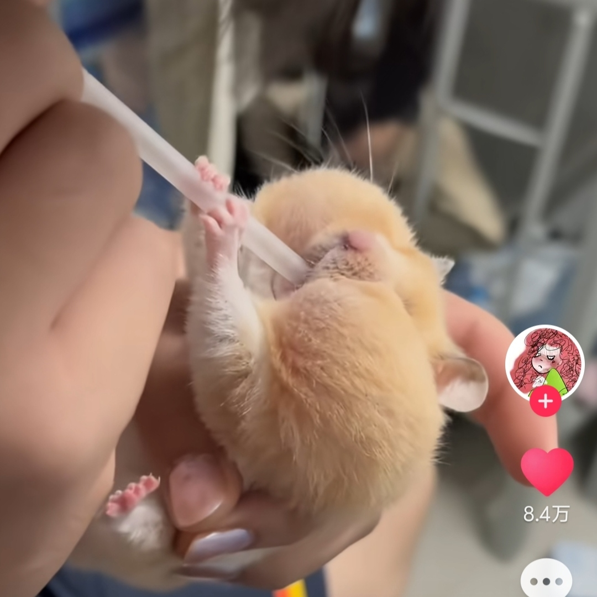
好可爱想一屁股坐死[害羞]
来财嘴巴滂臭
鼠：疯婆子，拿我当气球吹
托尼在钢铁侠系列中最开心的一笑[猪头] 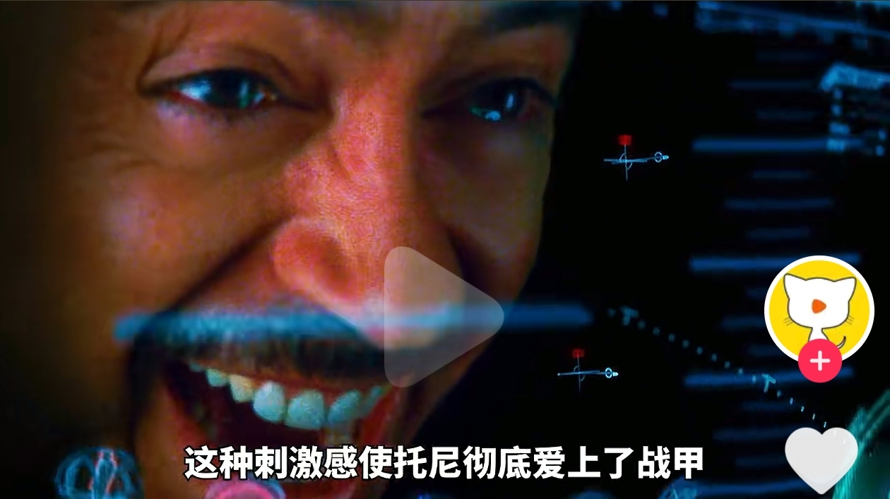
我觉得游泳才是S级里的王者！啥都不伤，我290斤，游泳一个月了已经瘦了40斤了，每天坚持游泳一小时，从一开始的一小时游800米，到现在的一小时能游2000米，对于我这种胖子，泡水里还不出汗，不伤膝盖
视频总结 S 上坡步行 椭圆机 A 爬楼梯 B 骑行 C 走路 D 跑步 那个运动 E F 拳击减肥
这才是中国音乐界的大姐[赞][玫瑰]
谁懂翅膀出来那一刻的救赎感[流泪] 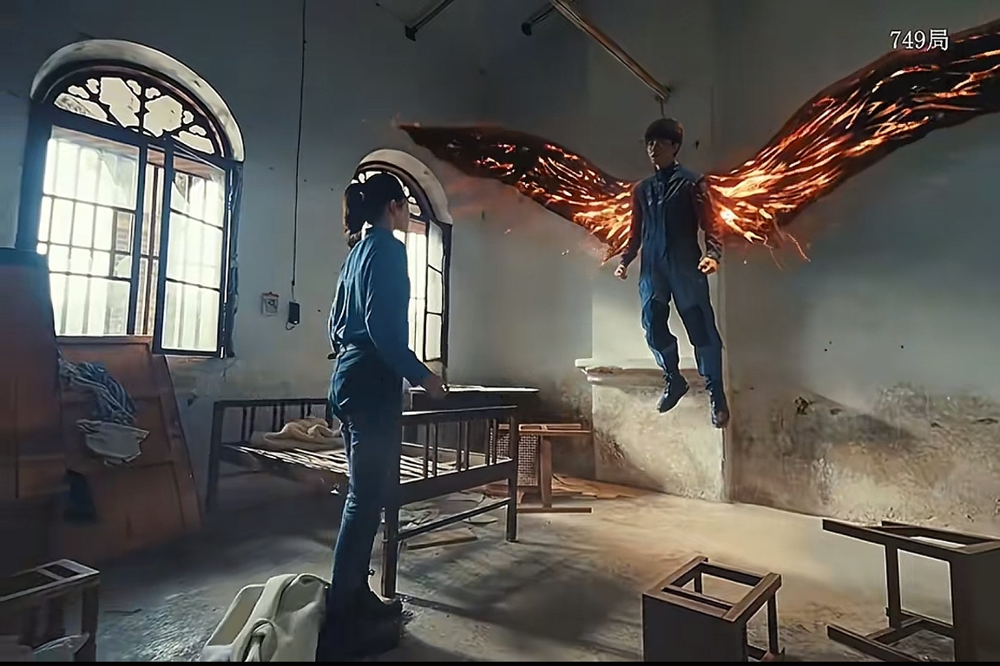
有人喜欢这个吗？我超喜欢！！！[送心][送心] 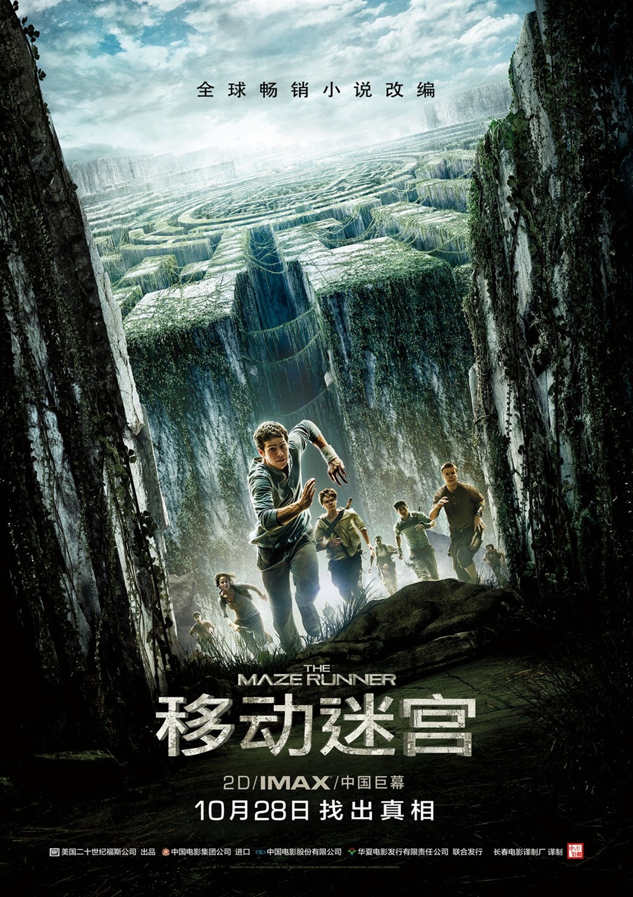
真不敢信环太平洋是 13 年的作品[流泪]
《星际穿越》上映10年多了，但与此同时米勒星球仅过去了一个多小时 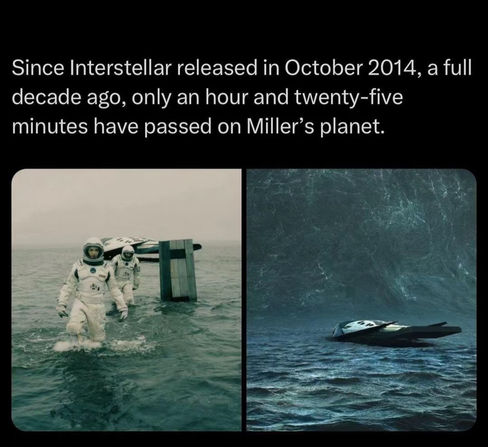
16年前的电影特效 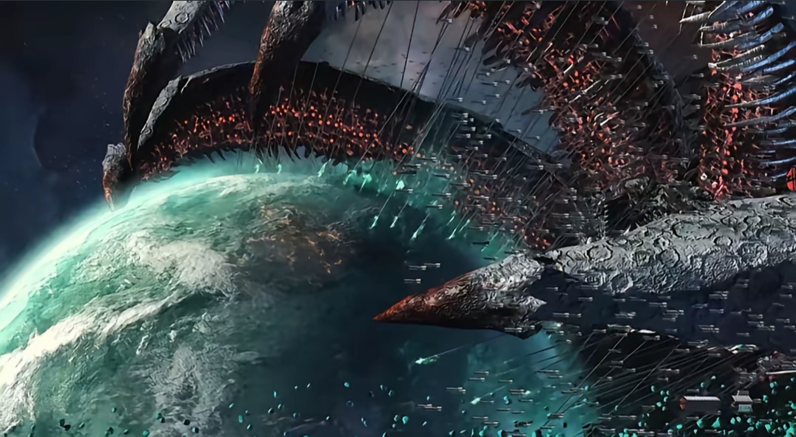
环太平洋！
逛了一圈评论区，好像没人推加勒比海盗，真的超喜欢这个系列[流泪]
至今忘不了猴子尾巴[微笑]
红色尾巴的少女是最变态的[愉快][赞]
我想我明白7e的视频为什么好看了，这口音一出来，就仿佛一东北大哥坐在一块儿就跟你唠，再恐怖的故事也不害怕了，你就听着嘎嘎乐就完了，属实令人身心舒畅啊
妈呀，简直哭死。内娱一直纠缠于情情爱爱，终于在一部剧中看到了母女情，而且是救赎型的。雁回时你不爆谁爆！
小孩演技真好
Read more: